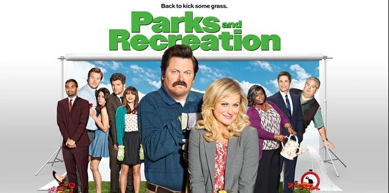
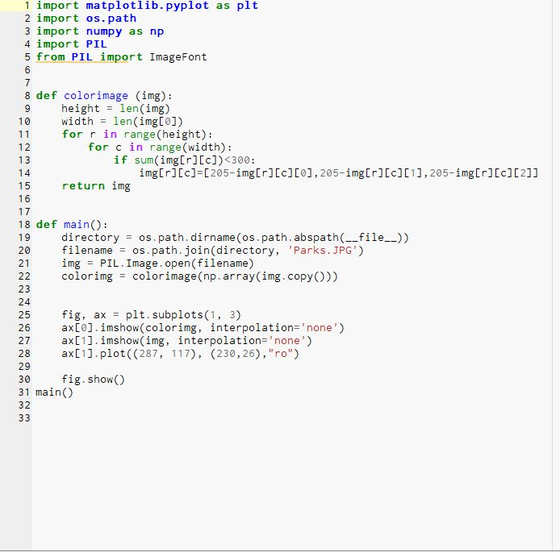
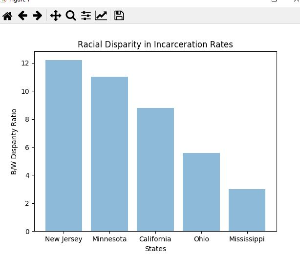

Welcome to my first game in Scratch Use the arrow keys to move around and try to touch the apple
The new app that I created is called Space Invaders. Tap the shoot button to destroy all the monsters
Python Project
Your name is Tony Stank, you are a doctor, and you are 35 years old.The zombie apocalypse started when Sachitt, a teenager was doing a science experiment but it went wrong, after that many people got bitten and were converted into zombies.
Welcome to the Capital City Quiz
This is our Image that we changed


Our question was: Is there a disparity in incarceration rates? This is a Graph of African Americans who were Incarcerated per White We chose this type of graph because we thought it was the best way to represent which states had higher disparity in incarceration rates This answers our question by showing that states that have a high disparity rate are states that have the least amount of African-Americans

In this simulation, there are two colonies of ants which follow a simple set of rules but the colonies still act sophisticated The thing that my partner and I changed was the color of the flowers and the colors of the ants and chemicals